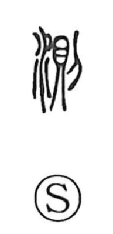

測

Uncategorized
Kun: hakaru | On: soku
to measure ・ to sound (depth)
Explanation
A phono-semantic character: the right-side element 則 serves as the phonetic, giving the on-reading soku and recalling the act of carving solemn treaty clauses into a bronze tripod (鼎) with a knife—inscriptions that became standards or rules (junsoku). With the water element added on the left, 測 came to denote taking soundings, especially measuring the depth of water, and by extension the broader act of measuring or judging whether something accords with a set standard.